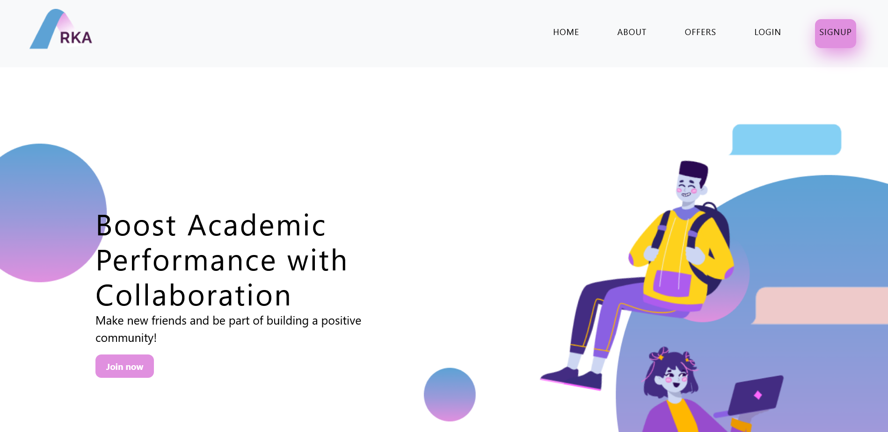
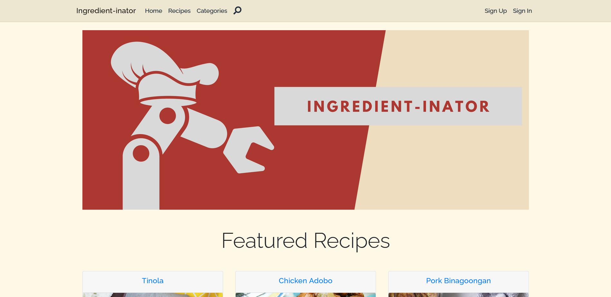

Hi there! My name's Joshua Sintos 😄
I'm a Software Engineer with 2+ years of experience automating workflows, building scalable systems, and creating solutions to problems.
SKILLS
Programming Languages
- HTML
- CSS
- JavaScript
- Typescript
- PHP
- Python
- Java
Libraries & Frameworks
- Node.js
- Express
- MongoDB
- React
- Vue
- GraphQL
- Symfony
- Laravel
- MySQL
Tools & Technologies
- Git
- Webpack
- Jest
- JavaFX
PROJECTS
Arka
Our thesis project. A study in determining whether a web-based communication platform is effective in boosting one's academic performance.
PHP
Laravel
Blade
Vue
JavaScript
Code


Josh & Josh's Sandwiches
A collection of pair programming machine problems that solely revolves around software design patterns and how we might utilize them in different scenarios.
Java
JSP
JavaScript
Code


Ingredient-inator
A digital cookbook which main theme revolves around generating recipes from ingredients users have in their pantry or refrigerator.
C#
ASP.NET
Code